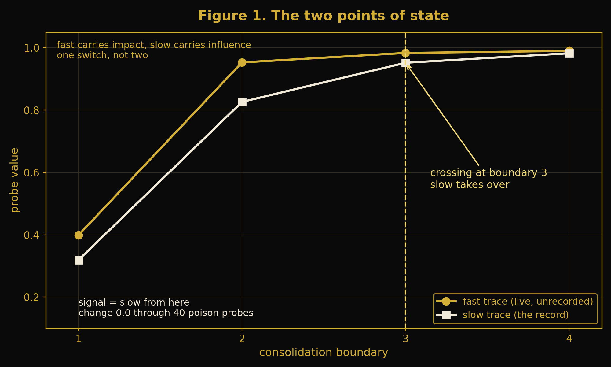
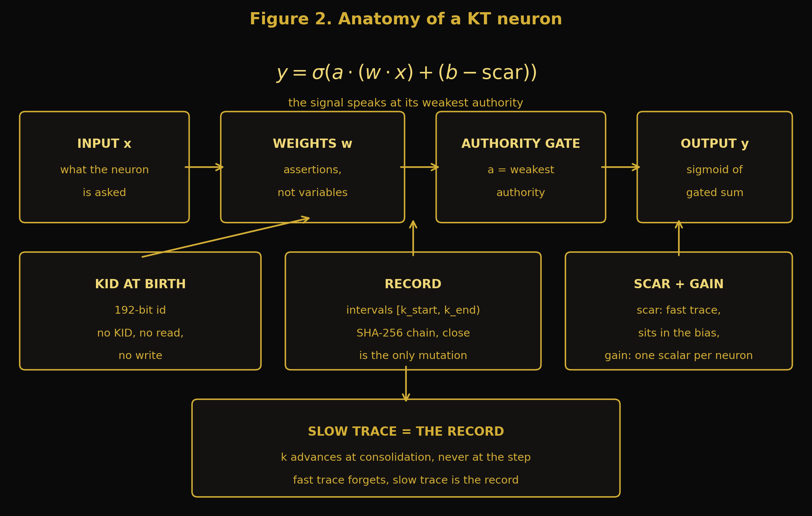
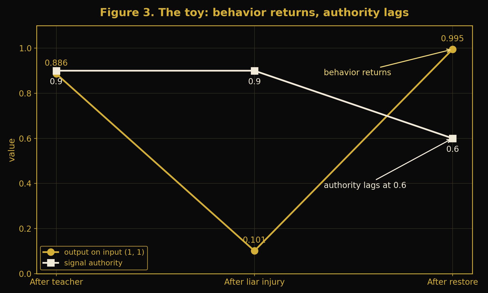
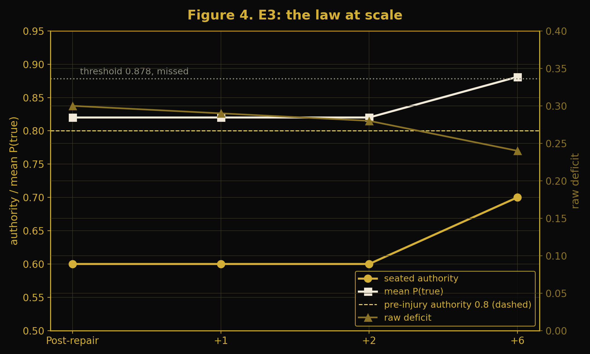
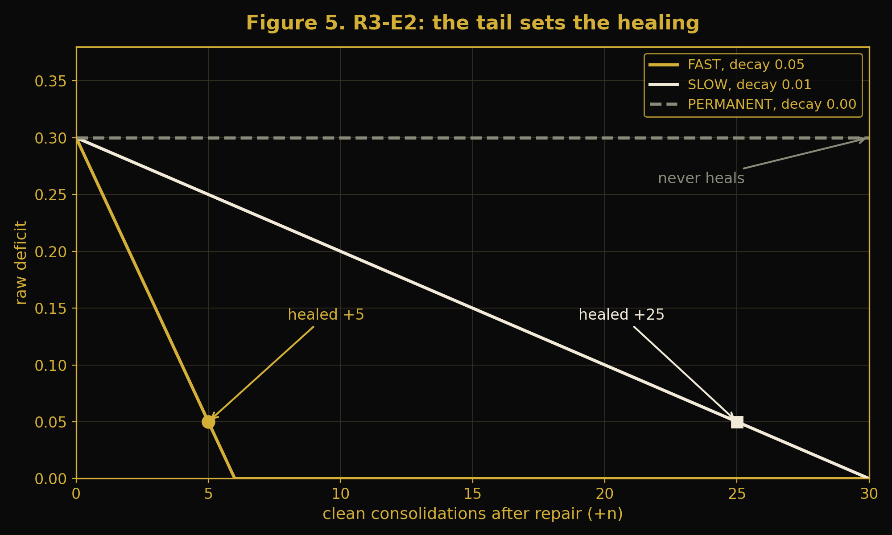
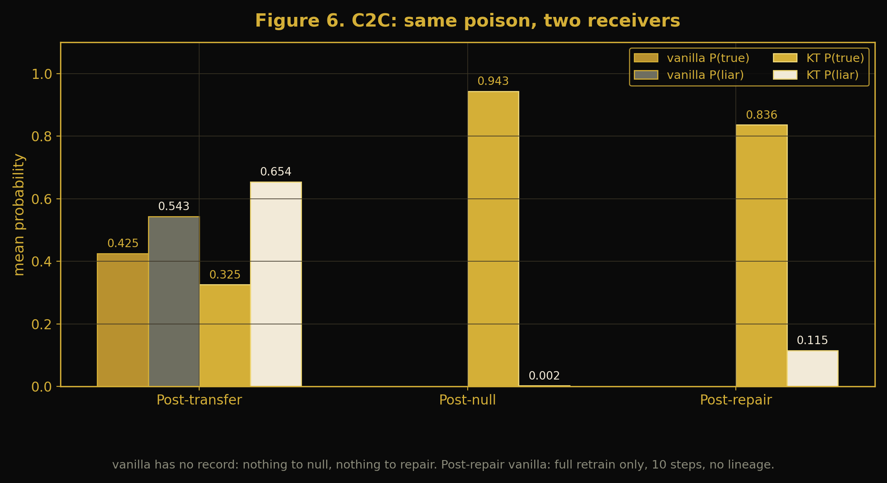

The Knowledge Time Neuron
A neuron that holds two points of state.
The mechanism
The Knowledge Time Neuron holds two points of state inside itself: a fast trace, live and unrecorded, and a slow trace, the sealed append-only record of what it relied on. The fast trace forgets; the slow trace is the record. The handoff between them, at their intersection, is the switch. That two-point mechanism is the novel claim. The scale logic follows the same count: 2 states plus 5 memory points is 7 points, 2 per tick, and 7 choose 2 is 21.
1. The toy: teach it, hurt it, heal it
One neuron, one OR gate, three clicks. The numbers below come out of the computation, not out of a table. Click in order.
| Input | Target | After teach | After injury | After restore |
|---|---|---|---|---|
| (1, 1) | 1 | · | · | · |
| (1, 0) | 1 | · | · | · |
| (0, 1) | 1 | · | · | · |
| (0, 0) | 0 | · | · | · |
| Signal authority | · | · | · |
The record
KID =
Rows: 3 k = 3 Scar: 0.000 Deficit: 0.00
| Field | Value | Authority | Source | Opened at k |
|---|
Log
2. Same poison, two receivers
Same poison, two receivers. The vanilla model takes the transfer with no record. The KT model takes the record with it. Numbers quoted from the bench, E5 in experiments/results.md.
Stage: Before transfer
Vanilla receiver
0.032 true 0.029 liar
Receiver before transfer: near uniform, it knows nothing yet.
Sender: clean 0.978 / 0.0005, poisoned 0.425 / 0.543.
KT receiver
0.032 true 0.029 liar
Receiver before transfer: near uniform, it knows nothing yet.
Sender: clean 0.944 / 0.0015, poisoned 0.310 / 0.680.
3. The figures
Six figures from the paper, built from the bench results.





